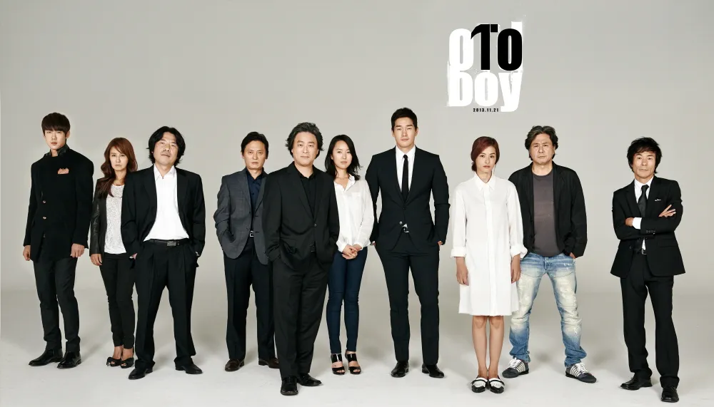

흥행 성적

청소년 관람불가 영화임에도 전국 관객 327만을 기록해 흥행으로도 크게 성공했다.
재개봉 성적은 33만7782명으로 한국 실사영화 중 1위를 기록했다.
수상 이력
- 2003년 제24회 청룡영화상: 감독상(박찬욱), 남우주연상(최민식), 여우조연상(강혜정)
- 2004년 제3회 대한민국 영화대상: 감독상(박찬욱), 최우수작품상, 남우주연상(최민식), 음악상, 조명상
- 2004년 제40회 백상예술대상 영화부문: 감독상(박찬욱), 남자최우수연기상(최민식), 여자신인연기상(윤진서)
- 2004년 제41회 대종상: 감독상(박찬욱), 남우주연상(최민식), 음악상, 조명상, 편집상
- 2004년 제12회 이천 춘사영화상: 남우주연상(최민식), 촬영상, 편집상, 심사위원특별상
- 004년 제4 회 부산영화평론가협회상: 감독상(박찬욱), 최우수작품상, 여우주연상(강혜정), 촬영상
칸 영화제 심사위원 대상
이전에도 국제 영화제 수상작이 몇 번 나오긴 했지만, 올드보이처럼 흥행성과 작품성을 동시에 인정받은 작품은 거의 없었다.